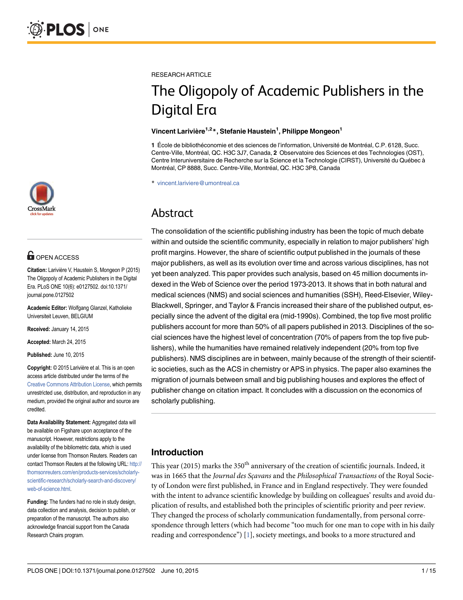

저자: Vincent Larivière, Stefanie Haustein, Philippe Mongeon | 날짜: 2015 | Journal: PLOS ONE | DOI: 10.1371/journal.pone.0127502 | arXiv: - 리뷰 모드: PDF
디지털 시대에 학술 출판은 더 분산되었는가, 아니면 오히려 소수 대형 출판사에 집중되었는가? 이 논문은 1973~2013년 WoS의 4,500만 편 논문을 분석하여 Reed-Elsevier, Wiley-Blackwell, Springer, Taylor & Francis 등 상위 5개 출판사가 2013년 전체 논문의 50% 이상을 차지하며, 인터넷 등장 이후인 1990년대 중반부터 집중이 더욱 심화되었음을 밝혔다. 디지털 기술이 출판 다양화 대신 과점을 강화했다는 역설적 결과이다.

Figure 1: 1973~2013년 주요 출판사별 논문 점유율 추이 — 디지털 전환 이후 상위 5개사 점유율 급증학술 출판의 과점화는 구독 비용 상승, 오픈 액세스 지연, 소규모 학회지 폐쇄 등 학문 생태계 전반에 부정적 영향을 미친다. 과점 구조가 디지털 전환으로 강화되었다는 발견은 오픈 액세스 정책, 공적 펀딩 출판 모델 논의의 실증적 근거이다.
| 항목 | 점수 |
|---|---|
| Novelty | 4/5 |
| Technical Soundness | 4/5 |
| Significance | 5/5 |
| Clarity | 5/5 |
| Overall | 4/5 |
총평: 학술 출판 과점화를 4,500만 편의 40년 데이터로 처음 실증한 영향력 있는 연구로, 오픈 액세스 운동과 출판 개혁 논의의 핵심 참조 자료가 되었다.